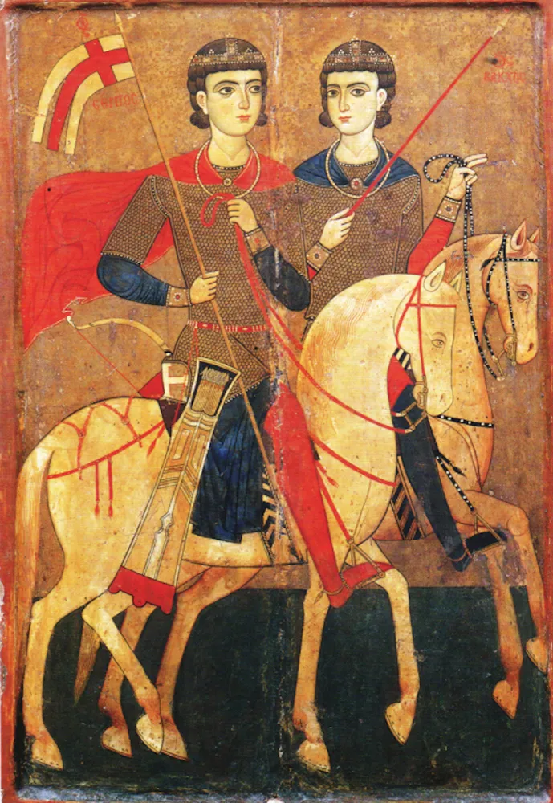

Sts Sarkis and Bakhos (Sergius and Bacchus)
Around the year 303, two officers of the Roman army in Syria would not give up their faith, and were put to death for it. Arabic-speaking Christians call them Mar Sarkis and Bakhos. They were not Lebanese, but the Maronite Church honors them, and one of the oldest monasteries above the Qadisha Valley carries their name.

Short Answer
Sarkis and Bakhos are the Arabic names of Saints Sergius and Bacchus, two Roman army officers martyred in Syria about 303. Their feast is 7 October. The Church counts them as martyrs of the early centuries, honored in the East and the West. They are not Lebanese saints: the Maronite Church venerates them, and the Maronite monastery of Mar Sarkis and Bakhos at Ehden is dedicated to them.
Key Teaching
The faith is worth more than the favor of the powerful, and it is easier to keep with a friend beside you. The old account has the two officers answer that nothing is gained by winning the world and losing one's soul, echoing Matthew 16:26.
Where it comes from: the Passion of Sergius and Bacchus, probably written in the 5th century. The Catholic Encyclopedia treats the martyrdom as well authenticated and the details of the Passion as legend, so we tell the teaching as the tradition's, not as a record.
How to live it today: name one friend who helps you stay faithful, and this week do one thing together, such as going to Mass or praying for ten minutes.
Two Officers at the Edge of the Empire
Documented: the Catholic Encyclopedia says Sergius and Bacchus died in the Diocletian persecution in Coele-Syria about 303, and that their martyrdom is well attested by the earliest martyrologies and by early veneration. It names them as officers of frontier troops. The encyclopedia places Sergius's burial at Resafa.
Reported in the Passion (legend): they stood high in the emperor's favor for their courage until they admitted they were Christians. Bacchus died under the blows of his beating. Sergius was sent on, and beheaded at Resafa. Later writers add stories such as the nail-studded shoes; we leave those out, as the encyclopedia itself calls them legend. Sources also disagree on which emperor was involved, so we name none.
A City Named for a Saint
Documented veneration: Resafa grew into a pilgrimage city and took the name Sergiopolis. The cult spread to Constantinople, where a church was built under Emperor Justinian, and to Rome. Soldiers later counted them among their patrons. Their friendship is a strong theme in the tradition; the story is told that they sang psalms together, a detail that comes from the Passion.
Resafa lies in modern Syria. Our illustrated storybook for ages 6 to 12 tells their story gently for families, with the same documented and legend labels.
Mar Sarkis and Bakhos in Lebanon
In the Qozhaya valley, part of the Qadisha world where the Maronite tradition grew, stands the monastery of Saints Sarkis and Bakhos above Ehden, called the "Watchful Eye of Qadisha." The Antonine Maronite Order received it on 1 September 1739. Its first church is dated to the 8th century by some sources, and a church of the same dedication is dated to about 730 by another; the sources differ, so we give no single year. Patriarch Estephan Douaihy was ordained a priest there in 1656.
Nearby you can read about the places of Saint Charbel's Lebanon. Whether a given pilgrim can visit depends on current conditions; check before you go.
How to Pray
Pray with them as friends who held to the faith together. You might pray:
"Holy Sarkis and Bakhos, you stood by each other when it cost you everything. Ask Our Lord to give me faithful friends, and the courage to keep faith with Him. Amen."
As with every prayer on this site: prayer asks, and God remains free - no formula guarantees an outcome.
Frequently Asked Questions
Who were Saints Sarkis and Bakhos?
Sarkis is Arabic for Sergius and Bakhos for Bacchus. They were two Roman army officers, remembered as martyrs of the Diocletian persecution in Syria around 303. They were not Lebanese; the Maronite Church venerates them, and Lebanon has a monastery named for them at Ehden.
When is their feast day?
7 October, kept by the Catholic and Orthodox churches. We have not checked the Maronite calendar date separately.
Is the story of their martyrdom true?
Their martyrdom and early veneration are well attested, and the Catholic Encyclopedia calls it well authenticated. The detailed story comes from a Passion probably written in the 5th century, and the same encyclopedia calls those details legend. This page marks which is which.
Where is Sergius buried?
The burial place was at Resafa, in Syria, which later took the name Sergiopolis. Resafa is in modern Syria, not Lebanon.
What is the Mar Sarkis monastery at Ehden?
A Maronite monastery in the Qozhaya valley above Ehden, dedicated to Saints Sarkis and Bakhos. The Antonine Maronite Order took it over in 1739.
Are Sarkis and Bakhos Lebanese saints?
No. They were Roman officers who died in Syria. They are honored by the Maronite Church and by many churches, and Lebanon has places named for them.
Sources
- Catholic Encyclopedia: Sergius and Bacchus - martyrdom about 303, "well authenticated"; details called legend
- Saints Sergius and Bacchus (Wikipedia) - Sergiopolis, churches at Constantinople and Rome
- Mar Sarkis, Ehden - monastery in the Qozhaya valley, Antonine Order from 1739
- Syriac Press: the monastery of Saints Sergius and Bacchus, Ehden - early church and Douaihy's ordination in 1656
- Wikimedia Commons: icon, Saint Catherine's Monastery, 13th century (public domain)